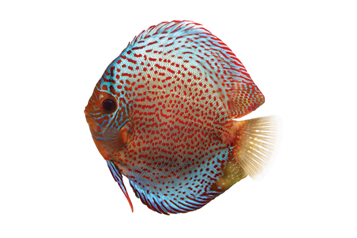
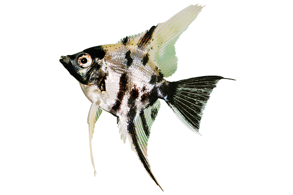
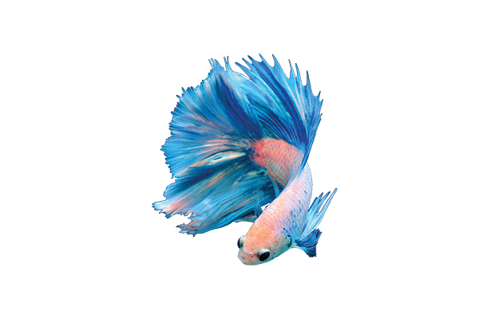
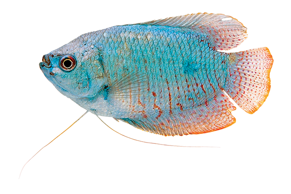
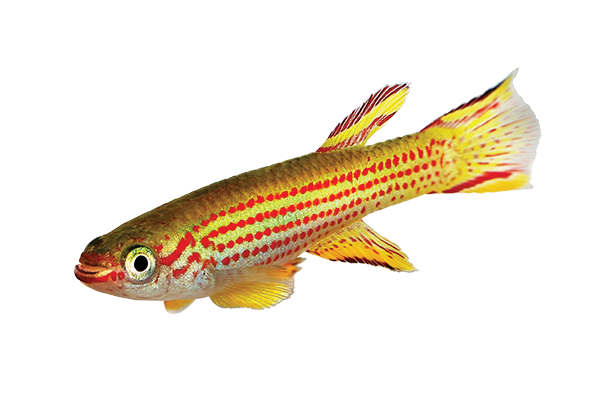
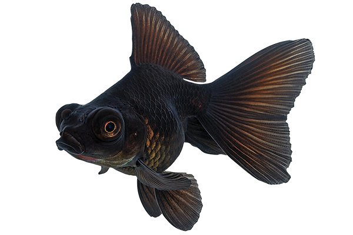
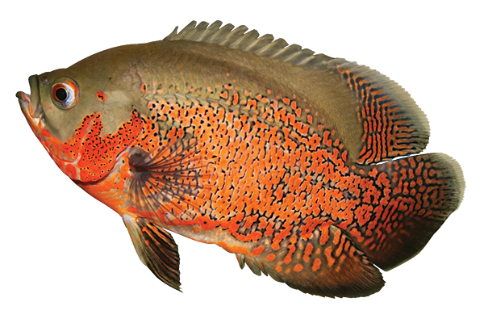
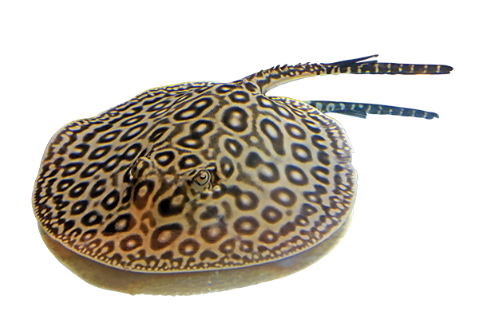

- Name: Discus
- Species: Symphysodon
- Harvest Location: South America
- Length: 22 cm
- Diet: Plant material and detritus

- Name: Angelfish
- Species: Pterophyllum
- Harvest Location: South America
- Length: 15 cm
- Diet: Small crustaceans

- Name: Betta
- Species: B. splendens
- Harvest Location: Thailand
- Length: 7 cm
- Diet: Insects

- Name: Gouramis
- Species: Osphronemidae
- Harvest Location: Asia
- Length: 15 cm
- Diet: Aqueon Tropical Flakes

- Name: Killifish
- Species: F. heteroclitus
- Harvest Location: Americas
- Length: 10 cm
- Diet: Brine shrimp

- Name: Goldfish
- Species: C. auratus
- Harvest Location: East Asia
- Length: 30 cm
- Diet: Crustaceans

- Name: Monster Fish
- Species: A. ocellatus
- Harvest Location: North America
- Length: 1.8 m
- Diet: Mealworms and raw fish

- Name: Freshwater Stingray
- Species: P. motoro
- Harvest Location: South America
- Length: 1.9 m
- Diet: Live blackworms
Locations
- Southeast Asia - Mekong River
- North America - Great Lakes
- South America - The Amazon River
- China - Yellow River
These are the global locations where I discorved and harvested these beautiful fish. During my travels, I was able to learn, meet, and experience many different cultures. Thanks to the locals, these exotic fish are more meaningful. There's a story behind each and every one.
"Fishing enablesus to get closer to nature." - Fennel Hudson